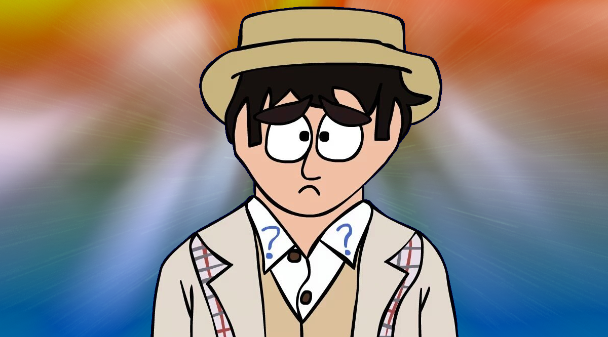

in: Doctors
The Beige Doctor

| Age | 665 |
| Place of origin | Gallifrey |
| Species | Time Lord |
| Gender | Male |
| Companions | • Pip
• Megan |
Cause of Regeneration | Unknown |
| First Appearance | Pip |
| Previous | Fruit Pastel Doctor |
| Next | Pompous Doctor |
"Can't we talk about this reasonably?"
― The Beige Doctor
Character
Well-mannered, but in desperate need of a spine and personality, the Beige Doctor travels nervously from one trap to the next.
Polite and apologetic, this Doctor has in manners what he lacks in genuine heroism. Most of the time, he'll be found having to escape from a number of awkward situations.
Outfit
Following his regeneration, the Sorry Doctor remained in the clothes of his previous incarnation. After being launched out of an ambulance and falling into a river, the Beige Doctor decides to replace his soggy clothes, and manages to acquire what can only be described as an Edwardian golfing kit.
His initial outfit consisted of a beige jacket, a white shirt with a red checkered pattern on the shirtfront & red question marks on each side of the shirt collar, an darker beige waistcoat, and a pair of blue checked trousers. He would also "steal" a straw hat from a man called Tarquin.
During his brief encounter with future companion Christie Christwald in Convolution of the Doctor, the Sorry Doctor is given a blue stitch-on question mark. This is likely the inspiration for his blue shirt collar question marks in later stories.
At some point before War of The Doctors, the Beige Doctor begins wearing a scarf, adds a handkerchief to his jacket pocket, and changes his shirt to a plain white one with blue question marks on each side of the collar.
In Beige Under Siege, following an encounter with a "giant sun-eating onion", the Beige Doctor's waistcoat is damaged. Later on, when dealing with escaped cartoon villain Devilish Dean, the Doctor replaces his waistcoat with a blue sweater, and seems to start permanently wearing a carrot brooch as part of his outfit.
Adventures
Early Life
The Doctor wakes up to find the TARDIS shrinking and closing in on him. Dazed and confused, he must find the correct switch in order to reset the dimensional stabiliser, or be crushed to death. (Smaller on the Inside)
The Doctor receives a distress signal from the planet Skaro. Upon arrival, the Daleks tell him they sent no such signal, as their planet is peaceful and thriving. The Daleks are peaceful now. The Doctor locates Davros, who reveals he was the one who sent the distress signal. The Doctor tells Davros that the Daleks being a force for good will help heal the universe and allow millions of beings to live in peace. The Doctor leaves. Davros gets really mad and decides the only option is to blow up Skaro and destroy the nice Daleks. (Generosity of the Daleks)
The Doctor sets course for the leisure planet, Equilibrium, for a holiday. On the way, the TARDIS is held up by space traffic caused by the Meddling Space Warden. (The Space Jam)
List of Appearances
| 1 | Pip | |
| 2 | Employee of the Month | |
| 3 | No Strings Attached | |
| 4 | Retirement of the Daleks | |
| 5 | Beige Under Siege | |
| 6 | Pip's Nightmare | |
| 7 | Cybermania | |
| 8 | A Change of Hearts | |
| Doctors | Original • Fractal • Beige • Diamond • Neon |